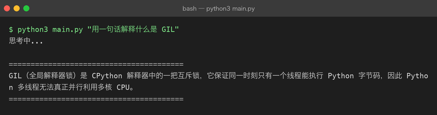
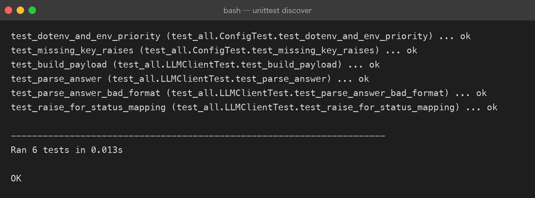
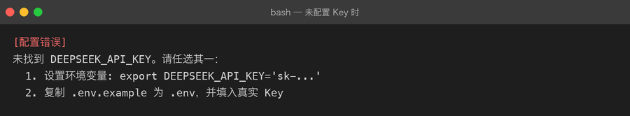

Project 01 — Python AI CLI Assistant
项目目标
通过持续升级一个 AI CLI Assistant，学习 Python 基础，并最终接入真实 LLM API。
为什么做这个项目
AI 项目全是 Python 写的。不理解 Python，就看不懂、写不出、改不动 AI 代码。 但 Python 内容太多——标准库、Web 框架、数据处理……有经验的开发者不需要从零学完整 Python 教程，而是直接从 AI 项目切入，项目缺什么能力就学什么。
解决什么问题
- 没有 Python 基础，看不懂 AI 项目代码
- 不理解 AI 项目特有的数据结构（messages / JSON / List / Dict）
- 不知道怎么从 0 开始构建一个 Python AI 项目
最终能力
完成后你会得到：
- 一个命令行交互的 AI Assistant
- 多轮对话 + 消息历史
- 可配置 API Key
- 真实调用 LLM API
- 完整 Python 基础（变量 → HTTP → LLM）
技术栈
- Python 3.x
- 标准库
urllib（HTTP；v0.1 刻意零依赖，后续里程碑引入 requests/httpx 时会对比"框架解决了什么"） json（标准库）os（环境变量）- 主流 LLM API（OpenAI / 兼容接口）
项目演进
v0.1 Variables — 程序能保存和打印数据
↓
v0.2 List / Dict / JSON — AI 项目最常见的数据结构
↓
v0.3 Condition / Loop — 程序有逻辑分支
↓
v0.4 Function — 代码可复用
↓
v0.5 Module / Package — 项目有结构
↓
v0.6 Exception — 程序能处理错误
↓
v0.7 File / JSON Persistence — 程序能读写数据
↓
v0.8 venv / pip / Environment — 项目可独立管理依赖
↓
v0.9 HTTP / API — 程序能和外部通信
↓
v1.0 Real LLM API — 项目接入真实 AIMilestones
| # | Milestone | 状态 | 核心能力 |
|---|---|---|---|
| 01 | Variables | ✅ | 变量 / 5 种基础类型 / type() / input() / print() / f-string |
| 02 | List / Dict / JSON | ✅ | List / Dict 嵌套 / JSON 序列化 / AI messages 数据结构 |
| 03 | Condition / Loop | ⬜ | if / for / while / break / continue |
| 04 | Function | ⬜ | def / 参数 / 返回值 / 作用域 |
| 05 | Module / Package | ⬜ | import / 包结构 / __init__.py |
| 06 | Exception | ⬜ | try / except / raise / 自定义异常 |
| 07 | File / JSON Persistence | ⬜ | 文件读写 / JSON 文件 / 持久化消息 |
| 08 | venv / pip / Environment | ⬜ | venv / pip / requirements.txt |
| 09 | HTTP / API | ⬜ | urllib / HTTP 基础 / REST API |
| 10 | Real LLM API | ⬜ | 真实 LLM 调用 / 串起所有知识 |
当前状态
Completed:
✅ 01 — Variables（完整 Project First 模板）
✅ 02 — List / Dict / JSON（有实质内容）
In Progress:
🔄 项目代码已有真实 LLM API 骨架
Next:
⬜ 03 — Condition / Loop
⬜ 04 — Function
...
⬜ 10 — Real LLM API（串起所有知识）当前版本
v0.2 — 有真实 LLM API 调用骨架，10 个 Milestone 完成 2 个。
运行效果
以下是本仓库当前代码的真实运行输出（不是效果图）。
接入真实 LLM API 后，一行命令就能问答：

单元测试保持全绿（每次改代码后都会跑）：

没配 Key 时不会崩溃，而是给出修复指引（异常层在起作用）：

项目结构
src/
├── main.py # 入口，已实现真实 API 调用骨架
├── .env.example # API Key 模板
├── assistant/
│ ├── __init__.py
│ ├── client.py # LLM 客户端
│ ├── config.py # 配置
│ └── errors.py # 自定义异常
└── tests/
└── test_all.py
exercises/ # 配套练习（做完打 ✅，每题亲手敲）
├── 01-basic/ # M01-02 · 8 道题 + 参考答案 answers.py
├── 02-practice/ # M03-06 · 条件循环 / 函数 / 模块包 / 异常（已播种）
├── 03-project/ # M07-09 · 往 src/ 里加功能的实战题（已播种）
└── 04-challenge/ # M10 · v1.0 综合挑战（已播种）运行：
cd src/
cp .env.example .env # 填入真实 API Key
python3 main.py已掌握能力
当前已掌握：
- Python 变量、5 种基础类型、type()、input()、print()、f-string
- List / Dict 嵌套、JSON 序列化、AI messages 数据结构
- 真实 LLM API 调用骨架
下一步
完成 Milestone 03-10，让项目从 v0.2 升级到 v1.0 真正可用的 AI CLI。